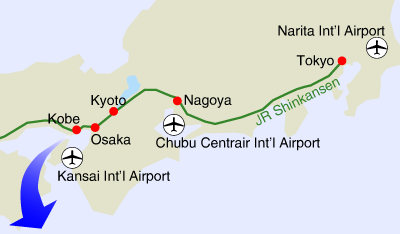
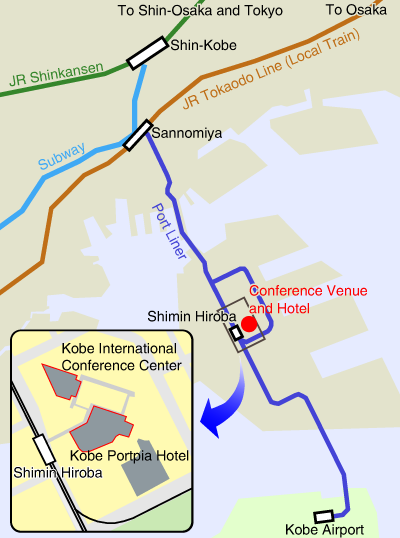

Access to Kobe Convention Center/ Portpia Hotel
There are 3 major international airports in Japan; Kansai International Airport (KIX), Narita International Airport (NRT), and Chubu Centrair International Airport (NGO).
Since the KIX is the nearest airport among them, we recommend the participants to arrive
the KIX if you have an accessible flight from your place of departure.
KANSAI
Int'l Airport
(KIX)*1
Int'l Airport
(KIX)*1
CHUBU Centrair
Int'l Airport
(NGO)
Int'l Airport
(NGO)
NARITA
Int'l Airport
(NRT)
Int'l Airport
(NRT)
Nagoya Station
Tokyo Station
Shin-Kobe Station
Kobe City Subway, Seishin-Yamate Line
200JPY
approx. 2 min.
200JPY
approx. 2 min.
Sannomiya Station
Haneda Airport
Kobe Airport
Shimin-Hiroba Station
On foot
approx. 1 min.
approx. 1 min.
Conference Venue and Hotel
| *1 | Bay Shuttle Ferry is also available from Kansai Int'l Airport to Kobe Airport. However, we do not recommend this route unless you can understand Japanese because there are few English guide signs on the way to and from the airports. |
| *2 | Bus stops are located outside the International Arrivals floor of the Passenger Terminal Building (1st floor center). Tickets can be purchased from the ticket vending machines located outside the Passenger Terminal Building on the 1st floor. |
| *3 | Please be careful not to take Nozomi trains bound for Shin-Osaka because they don't reach the Shin-Kobe station. Trains bound for either Hiroshima, Okayama, or Hakata are OK. |
Access Maps


Japan Railpass
For those who will arrive Narita Airport or attend Special SIGMUS Symposium,
the Japan Rail Pass is an inexpensive way to travel between Tokyo and Kobe.
This railpass allows overseas visitors to travel on JR Groupd transportation throughout the country.
For example, the price of the 7-day passes are 28,300 JPY, which is cheaper than the round-trip tickets between Tokyo and Kobe.
This railpass can only be obtained from a travel agency located outside of Japan.
Note that this raiplass is no valid for Shinkansen Nozomi. Thus, you have to take Shinkansen Hikari, which is a little bit slower than Nozomi.
See also.
Links
The followings are useful links for the participants.